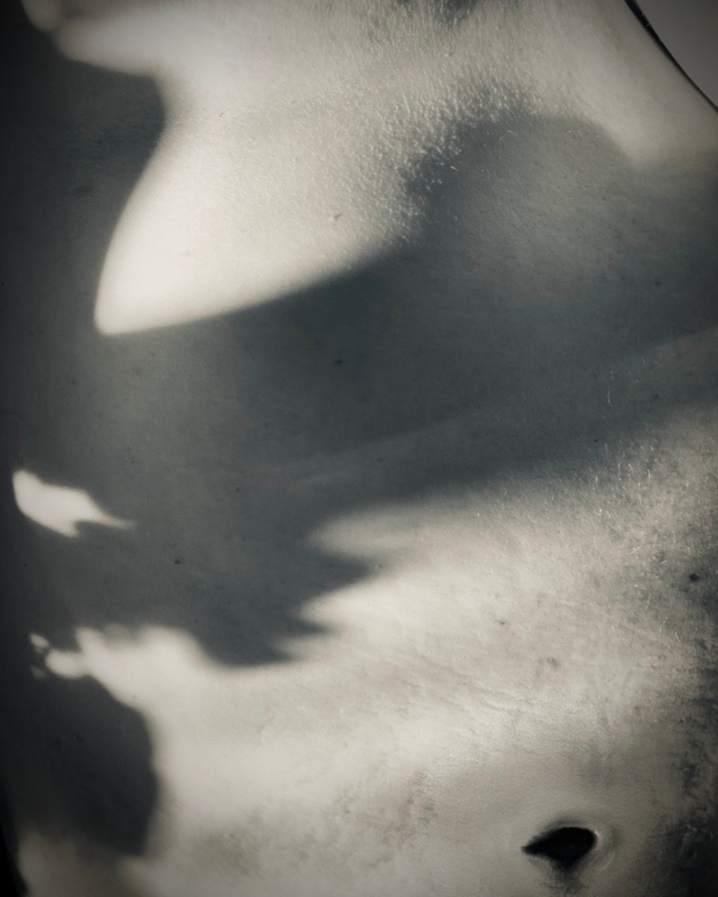
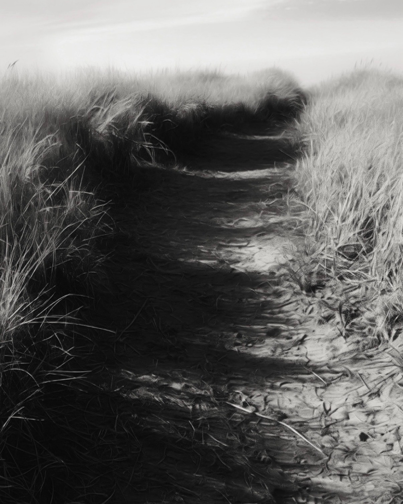

Attention before interpretation.
Photography and writing are not UX artifacts here. They are supporting evidence of a longer observational practice: noticing formal relationships, recurrence, scale, bodies, environments, and the patterns that emerge when unlike things are held next to each other.


Relationship by correspondence.
The diptych places body and landscape beside one another without asking them to become the same thing. Curves, channels, shadows, textures, and scale create a formal relationship before language explains it.
That habit of comparison also informs how I approach research: noticing possible relationships across contexts without assuming that similarity means equivalence.
Observation accumulated over time.
The poem moves among biological cycles, family time, politics, embodiment, place, grief, and emergence. Its relevance here is structural rather than literary: it records disparate observations long enough for relationships to appear.
The parallel to research is limited but useful: an observation does not become a finding simply because it is compelling. It can remain provisional while context accumulates.
“May, 2024” · Abby Buchanan
This page is intentionally secondary. It does not claim photography or poetry as UX methodology. Its role is narrower: to show a long-standing practice of sustained attention that informs, but does not substitute for, research method.